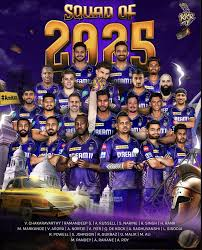

Kolkata Knight Riders
Defending champions with a passionate fanbase
About Kolkata Knight Riders

City: Kolkata, West Bengal
Home Ground: Eden Gardens
Captain (2025): Ajinkya Rahane
Owners: Red Chillies Entertainment and Mehta Group
Established: 2008
KKR, known for their aggressive batting and strong all-rounders, won their third IPL title in 2024.
[](https://www.indiatimes.com/events/tata-ipl-2025-points-table-teams-squad-captains-match-results-venues-and-latest-updates-for-18th-season-654817.html)Records and Achievements
IPL Titles
3 (2012, 2014, 2024)
Playoff Appearances
8
Notable Record
Highest team total: 272/7 vs Delhi Capitals (2024)
[](https://www.jagranjosh.com/general-knowledge/highest-team-score-in-ipl-1681906013-1)Key Player Stat
Andre Russell: Fastest 50 in IPL 2024 (20 balls)
[](https://www.jagranjosh.com/general-knowledge/ipl-2024-points-table-team-net-run-rate-standings-ranking-1711093613-1)2024 Highlight
Won IPL 2024 by 8 wickets, bowling out SRH for 113, the lowest total in an IPL final.
[](https://www.indiatimes.com/events/tata-ipl-2025-points-table-teams-squad-captains-match-results-venues-and-latest-updates-for-18th-season-654817.html)